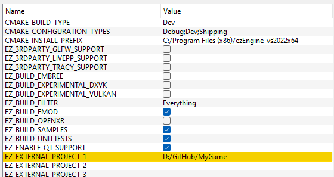

Custom Code with C++
To extend the engine with C++ code, you should put your code into an engine plugin. This enables both the editor as well as ezPlayer to load and execute your code.
Build Setup
The first thing you need to set up is your build system, meaning you need to have a project for your plugin. The easiest way to do so, is to use the C++ Project Generation functionality in the editor. Another option is to add your own project into the ezEngine source tree and just use EZ's CMake build setup and generated solution.
A cleaner approach is to do basically the same, but to put your code outside the EZ source tree, and add a reference to that folder:

This will integrate your source into the ezEngine solution. Make sure to use the same CMakeLists.txt files as the engine plugins in EZ do. With this option, you can have your code in a separate repository.
Another way is to use your own CMake based build setup, and integrate ezEngine as a Submodule.
All three solutions give you tight integration of your code and the ezEngine code, which makes debugging more convenient. You can, of course, also build ezEngine once and just link against its libraries.
Custom Game Code
For an example how to set up a game plugin, see the Sample Game Plugin. It is best to start with writing a custom component.
If you need higher level game logic, have a look at game states. Also have a look at input.
Once you add more complex systems, you may need the startup system to properly initialize them and shut them down.
Debugging & Profiling
The chapter Debugging C++ Code gives some useful tips. Things you should also be aware of are the console and CVars, as well as stats and debug rendering.
Finally, have a look at profiling, to know where your code spends most of its time.
Standalone App
If you want to write your own stand-alone application, have a look at the application (TODO) chapter. However, we encourage you to have your entire game code in a plugin, otherwise you can't use any of it in the editor. You would mostly need your own application for the finishing touches of how you present the main menu, etc, and a good starting point is to just copy the ezPlayer and make adjustments.